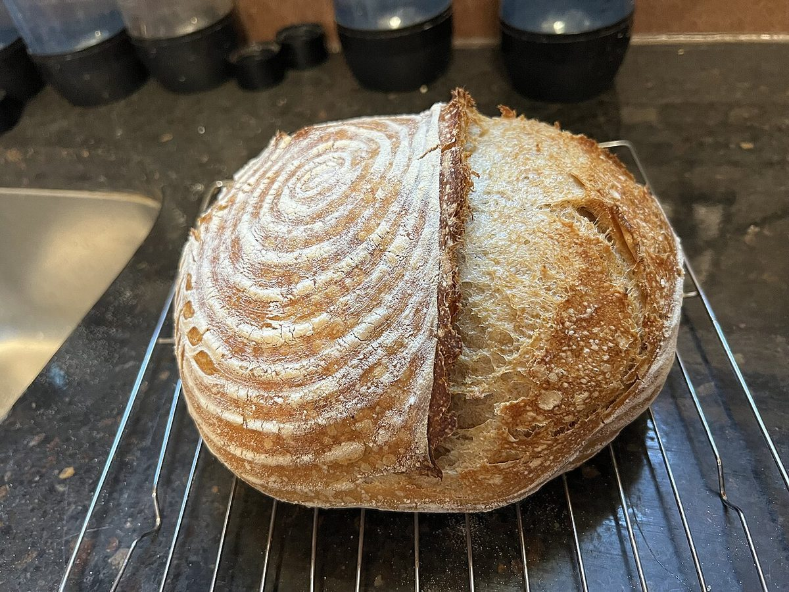

台紙 その2
台紙のこと
お店について確認できているのは、所在地・電話番号・Instagramのアカウントです。このページの「想像」は、制作側が考えた読みものです。
お店の実際の様子・考え・メニューとは関係がありません。



確認できていること
わかっていること
- 屋号は「パンちゃん」、業種はベーカリー
- 所在地は佐賀県多久市多久町５２１−１(〒846-0031)
- 電話番号は 0952-75-2056
- Instagramは @panchan2056
- 営業時間・定休日・メニュー・価格・ご予約・駐車場は準備中
想像してみる
一枚に一つずつ、名前を貼る
台紙のシールは、一枚ずつはがして、名前を書いて貼ります。このサイトでは、パンの写真をシールの代わりに並べました。丸、楕円、角丸と形を変えたのは、ただ台紙らしく見せるためです。
由来は分かりません。「パンちゃん」という名前を見て、制作側は名札のような小さな印を想像しました。実際のお店の姿ではなく、制作側が考えた読みものです。